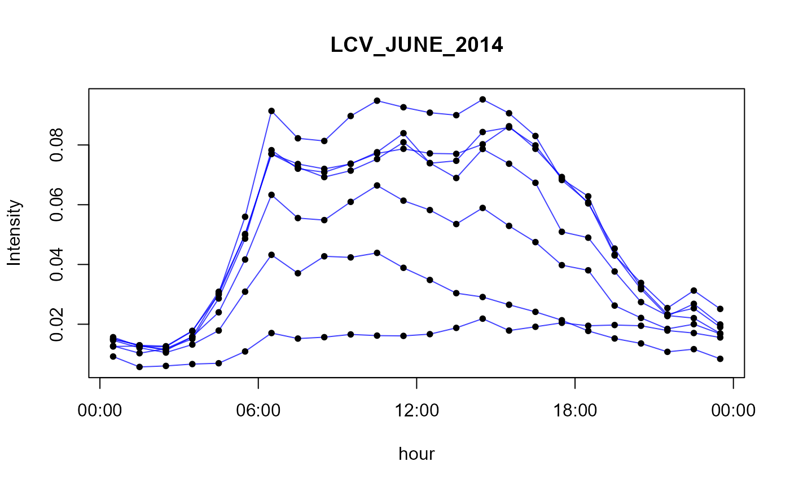
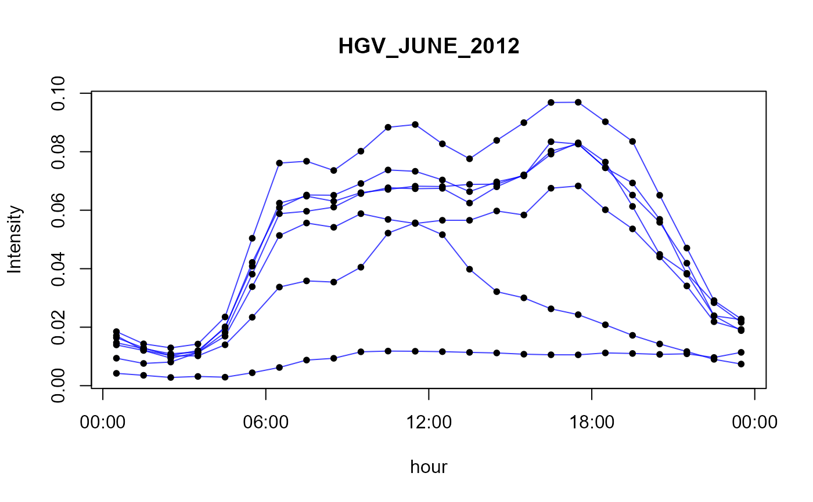
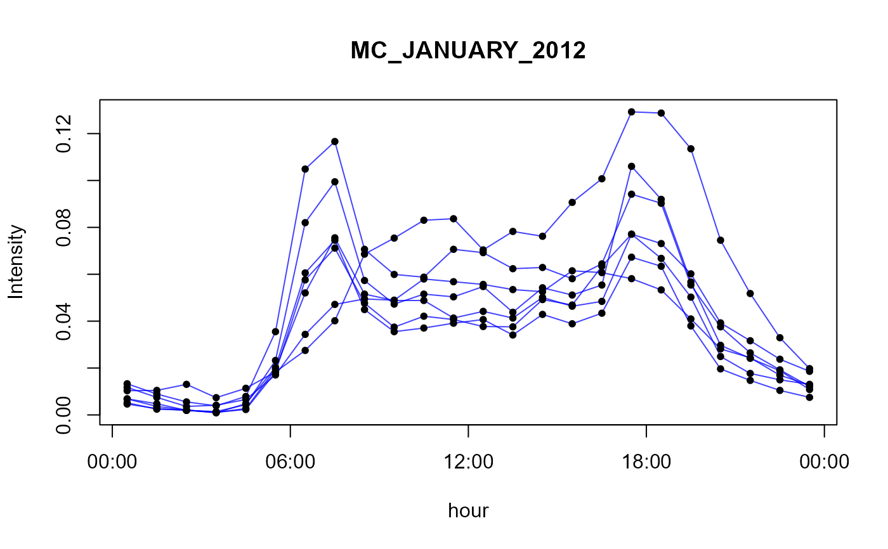

Temporal profile for veicular emissions
perfil.Rdset of houtly profiles that represent the mean activity for each day of the week. These profiles comes from traffic counts of toll stations located in São Paulo city, for summer and winters of 2012, 2013 and 2014.
data(perfil)
Format
A list of data frames by hour and weekday.
Note
The profile is normalized by days (but is balanced for a complete week) so diary emission x profile = hourly emission.
Examples
# load the data data(perfil)# function to simple view plot.perfil <- function(per = perfil$LDV, text="", color = "#0000FFBB"){ plot(per[,1],ty = "l", ylim = range(per),axe = FALSE, xlab = "hour",ylab = "Intensity",main = text,col=color) for(i in 2:7){ lines(per[,i],col = color) } for(i in 1:7){ points(per[,i],col = "black", pch = 20) } axis(1,at=0.5+c(0,6,12,18,24),labels = c("00:00","06:00","12:00","18:00","00:00")) axis(2) box() } # view all profiles in perfil data for(i in 1:length(names(perfil))){ print(paste("profile",i,names(perfil)[i])) plot.perfil(perfil[[i]],names(perfil)[i]) }#> [1] "profile 1 LDV"#> [1] "profile 2 HDV"#> [1] "profile 3 PC_JUNE_2012"#> [1] "profile 4 PC_JUNE_2013"#> [1] "profile 5 PC_JUNE_2014"#> [1] "profile 6 LCV_JUNE_2012"#> [1] "profile 7 LCV_JUNE_2013"#> [1] "profile 8 LCV_JUNE_2014"#> [1] "profile 9 MC_JUNE_2012"#> [1] "profile 10 MC_JUNE_2013"#> [1] "profile 11 MC_JUNE_2014"#> [1] "profile 12 HGV_JUNE_2012"#> [1] "profile 13 HGV_JUNE_2013"#> [1] "profile 14 HGV_JUNE_2014"#> [1] "profile 15 PC_JANUARY_2012"#> [1] "profile 16 PC_JANUARY_2013"#> [1] "profile 17 PC_JANUARY_2014"#> [1] "profile 18 LCV_JANUARY_2012"#> [1] "profile 19 LCV_JANUARY_2013"#> [1] "profile 20 LCV_JANUARY_2014"#> [1] "profile 21 MC_JANUARY_2012"#> [1] "profile 22 MC_JANUARY_2014"#> [1] "profile 23 HGV_JANUARY_2012"#> [1] "profile 24 HGV_JANUARY_2013"#> [1] "profile 25 HGV_JANUARY_2014"